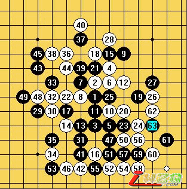
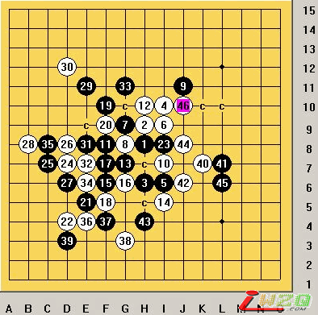

【有志注：原文发表于掌棋盟论坛http://www.zhangqimeng.com/viewthread.php?tid=6163】
我的对手,只有我自己,
下棋这几年中,遇见很多形形色色的棋手,无形给自己造成了一个阴影,我还年轻,对于Q游或者其他的游戏平台的五子棋爱好者,有种胆怯的思想。
我怕什么呢，我不知道，我怕输，我也没想过为什么输给别人，这次比赛，我输了，我输给我自己了
看看我下的那三盘棋，看着都丢人的，写到这里我的脸已经红了。
下面说说这次比赛，3月6日，我无意中在论坛看到了与杀手社的比赛，我马上就回帖报名参加比赛。当日夜，天公不作美，身体出现了不舒服的情况，接着天气越来越来冷，使我感冒又有明显的加重，感觉到要吃药了，四天的感冒，让我在宿舍老老实实待了四天，也没上网，也没下棋，终于在周四战胜的病魔，使我的身体回到了巅峰的第二个档次，周五才是巅峰的第一的状态。我们周五没课，可是大队长说，下午下课之后，学生处处长要来给我讲话，NND。我本来吃过中午饭就可以上网的，没办法等到领导讲完话已经快六点。我到网吧之后，准备了两个变化，一个瑞星，一个疏星。等待比赛。
第一盘，我开局，我想第一盘要把对手拿下，给对手心里上造压力。。我就开瑞星，对手交换，常规的前十手，对手变招，走了一个我没见过的11.我脑子突然锰了，我赶快翻我的棋谱，当我看完我的棋谱，我的棋谱没有这个11，我傻了，第一盘让对手拿下，我心不甘，走了这个十二，事后，朋友告诉这个十二不是最强，最强在10手右两格，对手走的也不是很强硬，我慢慢的找回了自己的主动权，行至36手的时候，因为时间在读秒了，我的时间不是很充分，对棋的把握还是不够，走出了这盘棋，最大的失败之处，36在37的位置，冲四，之后38在36的位置，做杀，这里可以杀掉，因为自己的能力，还是时间的问题，没走出最强，。下面有序的先后落子，52手的时候，对手提和，我没同意，下到63手的时候，感觉这盘想胜对手，已经没机会了，就提和，对手同意。

第二盘，对手开局，瑞星，我没交换，因为我准备了一个白棋的变化。
常规的前十手，对手又给了我一个陌生的11，当我看到这个11的时候，我就笑了，我才拆过这个11，12应上，黑13活三进攻，有人说白14防守在上面时最强，我没拆，不时很清楚，我档下面，黑棋一直进攻到23手，白24左侧控制，这个局面我已经拆过了，黑27活三，28上档，如果你现在用小黑，会发现，黑棋的数值230+，我见对手，这样走下去，我笑了，这盘我拿下来了，我小心的应对，在32手的时候，我犹豫了，我应在31上还是31下，我考虑了下，我应对了31下，对手33不明白是怎么回事，对手既然不进攻，我就进攻34活三，黑棋上档，36继续活三这里叫杀，黑棋能做掉，但是黑冲四的话，也是败，40手叫杀，下面就简单胜了。这盘有准备的把对手拿下，下完这盘感觉对手不是很强。心头有轻敌的想法。

下面第三盘，还是瑞星，对手开局。
下了两盘瑞星，感觉对手，实力不是很强，我就交换了，瑞星白太难受了，。常规的前十一手，第十二手对手走了现在对流行的12.我在三手经常见人走这个13我也想走走这个13，说实话，我没拆过这个13，所以，冒险的下法，还是自以为是，。接来看无伤哥的棋评，我要说说我的27，因为对手实力不是很强，我也没多想，就档在24-26这个斜线上，对手抓到我这个失误，速杀了我。
通过这次比赛，我认为，我需要提高的空间还是很高，和掌棋的新一代棋手相比，我还是很大差距的，只有通过比赛才能找到我的能力。通过比赛找到我的缺点,使我有了一定的进步.